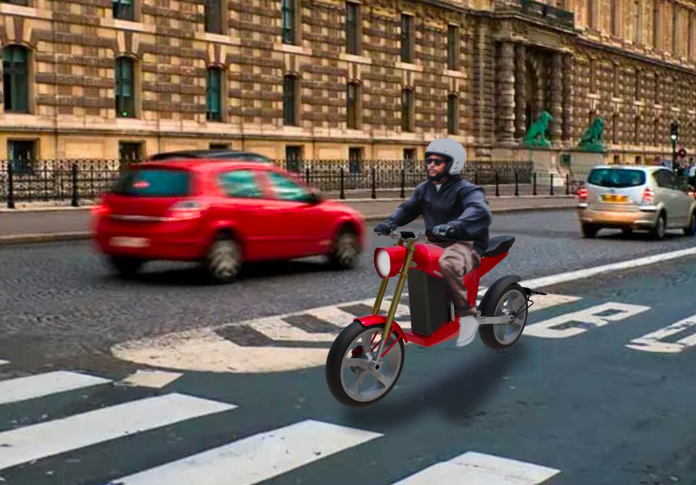
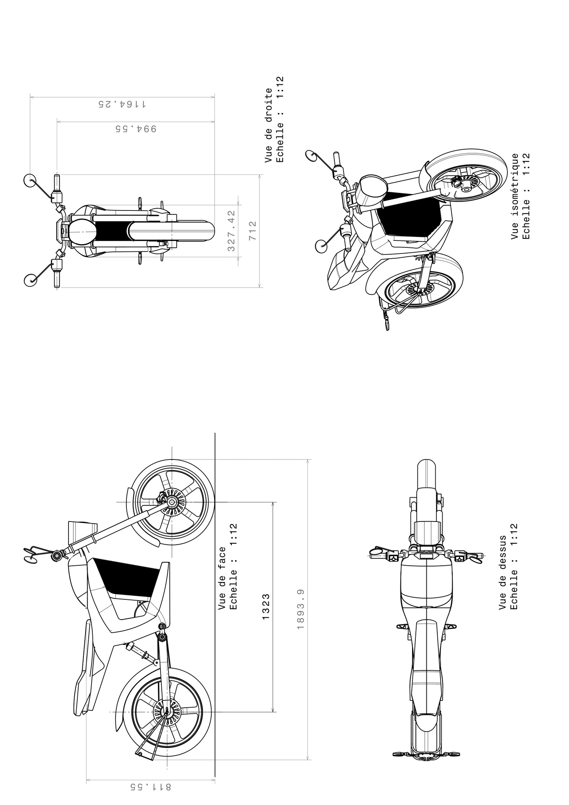
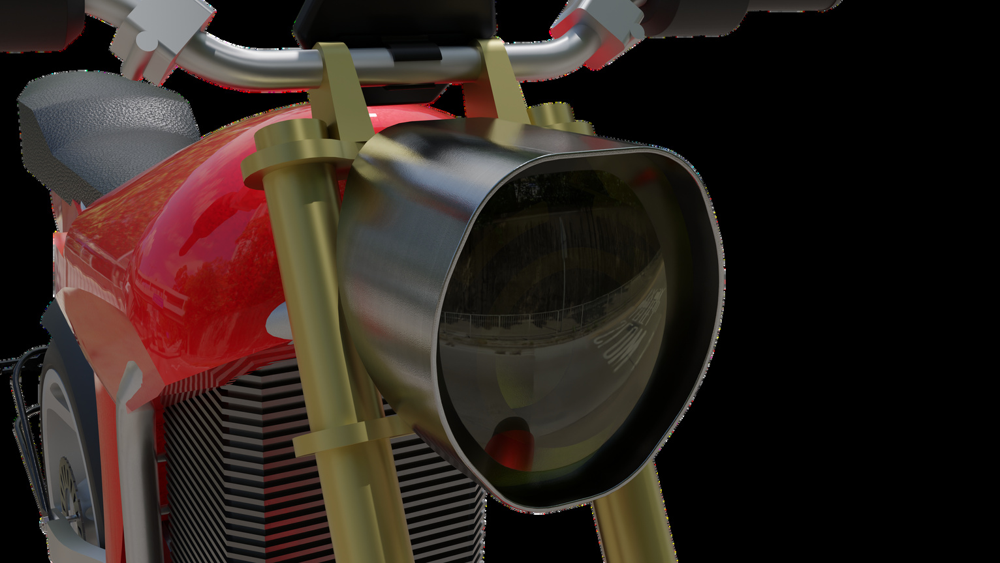
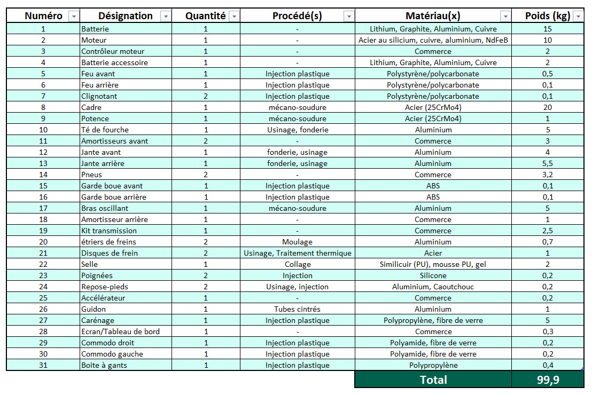
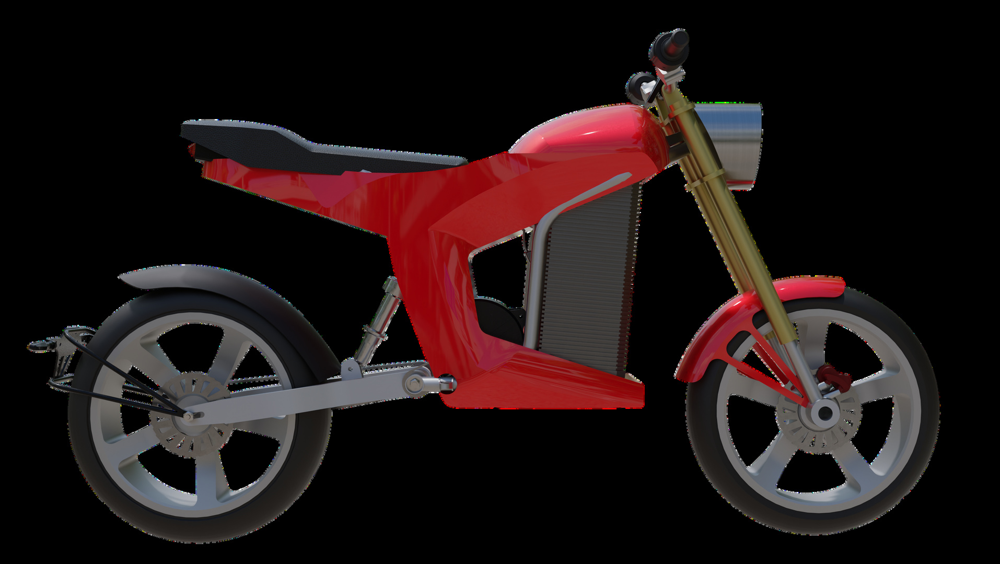
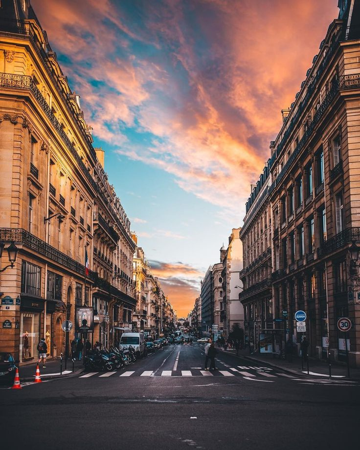

DI9T — P25 · Mobilité électrique
Conception complète d'une moto électrique urbaine compacte. Dimensionnement de la chaîne de traction, architecture du cadre, intégration batterie amovible et approche marketing orientée mobilité durable.
URBA-E Flux est une moto électrique compacte pensée pour la ville. Le projet a démarré d'un constat simple : les deux-roues électriques existants sacrifient soit la maniabilité, soit l'autonomie. Flux cherche à concilier les deux grâce à une architecture repensée autour d'une batterie amovible de 15 kg.
Le design intemporel repose sur des lignes épurées et un gabarit ultra-compact — guidon plié à 350 mm de large, empattement de 1323 mm — pour se faufiler en ville et se garer sans contrainte. La batterie détachable permet une recharge à domicile ou au bureau, éliminant le besoin d'une borne dédiée.
L'étude de marché et le cahier des charges ont orienté chaque choix technique : masse contenue à 97,7 kg, capacité biplace, et une chaîne de traction dimensionnée pour les usages urbains (0–80 km/h) avec une attention particulière à la récupération d'énergie au freinage.





